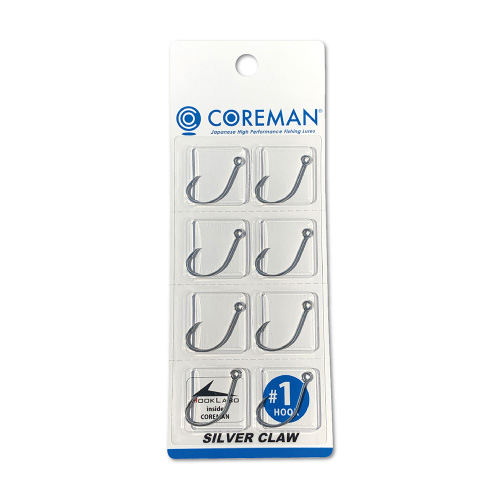
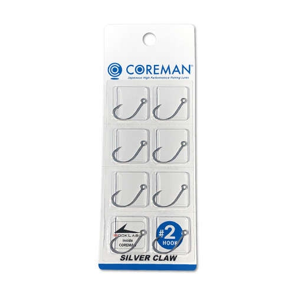
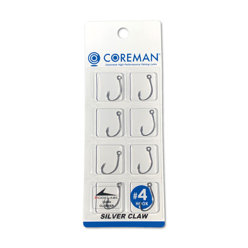
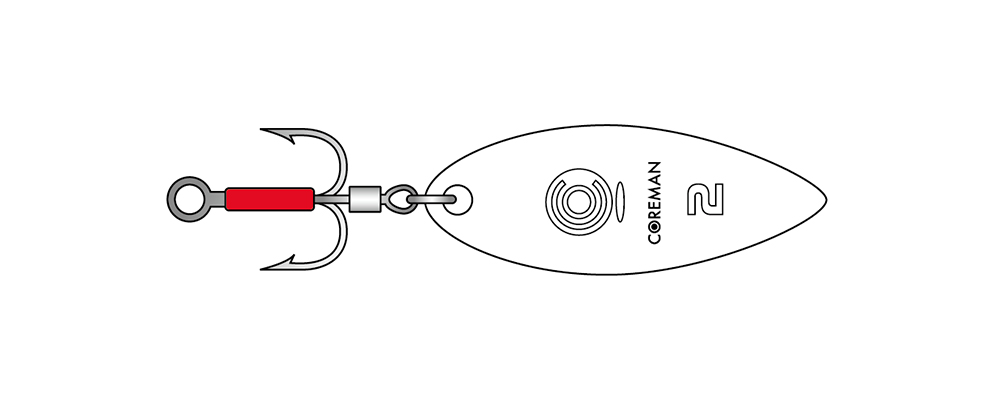

シルバークロー
（SILVER CLAW）
シルバークロー（SILVER CLAW）はCOREMAN（コアマン）のシングルフックです。
「メタルバイブレーションにはシングルフック！これがシーバスゲームのニュースタンダード！」。メタルバイブ専用に設計されたシーバス用シングルフックで、アイアンプレートSCに標準装備されています。フックが甘くなった時の交換用としてそろえておくと、いつでも新品の刺さりに戻せます。

画像出典:コアマン公式HP
スペック
- メーカー
- COREMAN（コアマン）
- タイプ
- メタルバイブ用シングルフック
- 製造
- フックラボ
- サイズ
- #1／#2／#4
- 仕上げ
- スズメッキ（TIN PLATING）
- 入数
- 8本入り
- ターゲット
- シーバス
- 価格
- 700円（税別）
▼今すぐチェック
シルバークローの特徴
飛距離もキャッチ率も上がる、メタルバイブのための専用シングルフック
-
口に吸い込まれやすい特殊なカーブ
最大の特徴は、フック先端の鋭いカーブ。特殊なカーブ形状で、魚の口に吸い込まれやすくなっている。トレブルフックでは刺さらなかったポイントに刺さり、硬い場所に刺されば魚は外れない。
-
トレブルフック付きより飛距離110％以上
メタルバイブにトレブルフックを付けた時と比べて、飛距離は110％以上。空気抵抗が減るうえ、フックがラインを拾うようなトラブルも減る。
-
キャッチ率がアップする
確実にフッキングしてバラシが減るので、キャッチできる確率が上がる。アイアンプレートSCシリーズの「鉄板バイブにシングルフック」を支えるフックだ。
シルバークローの選び方
サイズは、使うアイアンプレートに合わせて選ぶのが基本。公式の推奨は、IP-13にはSC-M #4、IP-18・IP-25 HL・IP-26にはSC-M #2です（#1もIP-18・IP-25 HL・IP-26に対応）。
推奨サイズで使うのが、フッキングとアクションのバランスを保つコツです。
シルバークローの向いている使い方
アイアンプレートSCのフックが甘くなった時の交換用として、予備を持っておくのが一番の使いどころ。
トレブルフック付きのメタルバイブをシングルフック仕様にして、飛距離とキャッチ率を上げたい時にも選びたいアイテムです。
ワンポイント
シングルフックはトレブルフックとフッキングの仕方が違います。魚が乗ったらしっかり合わせを入れて、硬い場所に刺しましょう。
フックポイントは使っているうちに少しずつ鈍くなるので、刺さりが悪くなったと感じたら早めに交換するのがキャッチ率を上げる近道です。
サイズの使い分け
| サイズ | 推奨ルアー | ポイント |
|---|---|---|
| SC-M #1 | IP-18／IP-25 HL／IP-26 | 大きめのフックで掛かりを重視したい時に |
| SC-M #2 | IP-18／IP-25 HL／IP-26（推奨） | IP-26 SCの標準フック。迷ったらこれ |
| SC-M #4 | IP-13（推奨） | IP-13 SCの標準フック。小型の鉄板バイブ用 |
※公式の推奨サイズ表をもとにしています。推奨サイズで使用することがおすすめされています。
サイズラインナップ
シルバークローは#1・#2・#4の3サイズ展開です。

SC-M #13サイズの中で一番大きいフック。

SC-M #2IP-26 SCの標準装備サイズ。

SC-M #4IP-13 SCの標準装備サイズ。
画像出典:コアマン公式HP
シルバークローとあわせてチェックしたいアイテム
-
 アイアンプレートSC IP-26
コアマン
詳細はこちら＞
アイアンプレートSC IP-26
コアマン
詳細はこちら＞
シルバークロー #2を標準装備した鉄板バイブ。シルバークローの交換相手として一番使うルアー。
-

ブースターシステム コアマン 詳細はこちら＞パワーブレード用のブレード一体型フック。同じく交換用パーツとしてそろえておきたい。